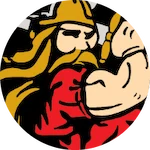

FRC 1501 · Huntington
Team THRUST
Huntington North High School / Huntington County 4-H
2× event winnerWorld ChampionshipImagery AwardInnovation in Control Award+1 more
People named in public sources (1)
- Chris Elston · Lead Engineering Mentor, Huntington 4-H Robotics
Undated source · Season Evidence from the published research; see date and notes · Self-reported · Public professional profile lists July 2004 to Present. A 2025 public post corroborates his association with THRUST 1501. The profile is undated; the head-coach title and a 2026-27 appointment are not independently verified. · Undated source · source 1 · source 2
Student team captain not verified. Current formally designated head coach not independently verified; the documented title is Lead Engineering Mentor.
2026 season
| Event | After qualifying | Playoffs |
|---|---|---|
| Mishawaka Mar 6–8, 2026 | 1st 17-1 record | Won the event Captain of the #1 alliance |
| Lafayette Mar 26–28, 2026 | 2nd 15-2 record | Won the event 1st pick of the #1 alliance |
| Indiana State Championship Apr 17–19, 2026 | 6th 10-5 record | Tied 5th (out in playoff round 3) Captain of the #5 alliance |
| World Championship (Archimedes) Apr 29 – May 2, 2026 | 62nd 3-7 record | Not picked for playoffs |
Offseason events (1)
| Event | After qualifying | Playoffs |
|---|---|---|
| RiverBOaT Rumble Jul 10–11, 2026 | 5th 9-6 record | Reached playoffs 1st pick of the #2 alliance |
Awards
- Imagery Award in honor of Jack Kamen · Mishawaka
- Innovation in Control Award sponsored by nVent · Lafayette
- Quality Award · Indiana State Championship
Coming up
Entry lists for 2026–27 events haven’t posted yet. See the full calendar.
Team facts
- Huntington North High School / Huntington County 4-H · Huntington, Huntington County
- School connection plus community 4-H program; participation is not restricted to one high school.
- 22 FIRST seasons through 2026 · rookie year 2005
- Indiana EPA rank 12 of 68 · world 438 of 3,724